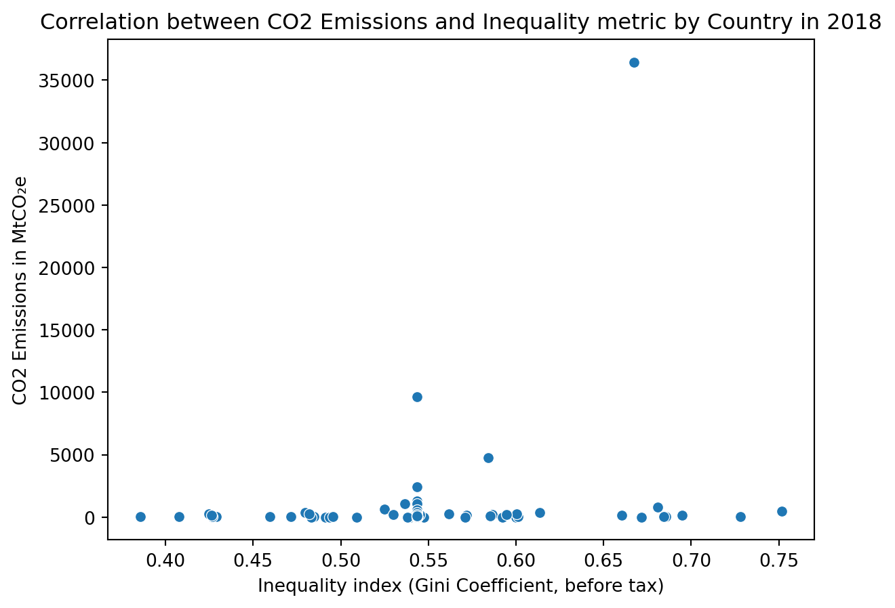

Code
import matplotlib.pyplot as plt
import numpy as np
import pandas as pd
import seaborn as sns
from sklearn.impute import SimpleImputer
from sklearn.cluster import KMeans
emissions_csv = 'https://raw.githubusercontent.com/erica16/ml1_blogs/main/data/historical_emissions.csv'
inequality_csv ='https://raw.githubusercontent.com/erica16/ml1_blogs/main/data/inequality.csv'
#read in datasets
emissions_df = pd.read_csv(emissions_csv)
inequality_df = pd.read_csv(inequality_csv)
#clean data
inequality_filtered = inequality_df.filter(['Country', 'Year', 'Gini coefficient (before tax) (World Inequality Database)'])
print(emissions_df.info())
#filter to 2018
inequality_2018 = inequality_filtered.loc[inequality_filtered['Year'] == 2018]
print(inequality_2018.info())
#merge dfs on country
inequality_emissions_df = inequality_2018.merge(emissions_df, on='Country')
in_em_nums = inequality_emissions_df.select_dtypes(include=[np.number])
imputer = SimpleImputer(strategy="median")
imputer.fit(in_em_nums)
in_em_imputed = imputer.transform(in_em_nums)
inequality_emissions_df[in_em_nums.columns] = in_em_imputed
# Visualize the data
sns.scatterplot(data=inequality_emissions_df, x='Gini coefficient (before tax) (World Inequality Database)' ,y='2018')
plt.xlabel('Inequality index (Gini Coefficient, before tax)')
plt.ylabel('CO2 Emissions in MtCO₂e')
plt.title('Correlation between CO2 Emissions and Inequality metric by Country in 2018')
plt.show()<class 'pandas.core.frame.DataFrame'>
RangeIndex: 195 entries, 0 to 194
Data columns (total 34 columns):
# Column Non-Null Count Dtype
--- ------ -------------- -----
0 Country 195 non-null object
1 Data source 195 non-null object
2 Sector 195 non-null object
3 Gas 195 non-null object
4 Unit 195 non-null object
5 2018 195 non-null float64
6 2017 195 non-null float64
7 2016 195 non-null float64
8 2015 195 non-null float64
9 2014 195 non-null float64
10 2013 195 non-null float64
11 2012 195 non-null float64
12 2011 195 non-null float64
13 2010 195 non-null float64
14 2009 195 non-null float64
15 2008 195 non-null float64
16 2007 195 non-null float64
17 2006 195 non-null float64
18 2005 195 non-null float64
19 2004 195 non-null float64
20 2003 195 non-null float64
21 2002 195 non-null float64
22 2001 195 non-null float64
23 2000 195 non-null float64
24 1999 195 non-null float64
25 1998 195 non-null float64
26 1997 195 non-null float64
27 1996 195 non-null float64
28 1995 195 non-null float64
29 1994 195 non-null float64
30 1993 195 non-null float64
31 1992 195 non-null float64
32 1991 195 non-null float64
33 1990 194 non-null float64
dtypes: float64(29), object(5)
memory usage: 51.9+ KB
None
<class 'pandas.core.frame.DataFrame'>
Index: 210 entries, 38 to 9923
Data columns (total 3 columns):
# Column Non-Null Count Dtype
--- ------ -------------- -----
0 Country 210 non-null object
1 Year 210 non-null int64
2 Gini coefficient (before tax) (World Inequality Database) 80 non-null float64
dtypes: float64(1), int64(1), object(1)
memory usage: 6.6+ KB
None